Чудо
Расчудеснушка - Чудо
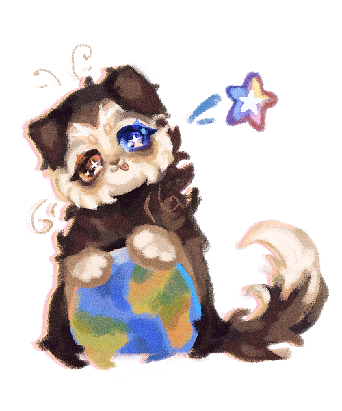
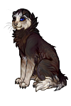
привет. этоя. сова на глобусе. дада тот самый глобус у тебя в углу шкафа про который ты забыл. да. я знаю что ты путаешь арктику и антарктику. я помню про какой штат сша ты всегда забываешь..)
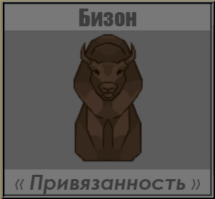
ᛁᚾᛞᛖᛈᛖᚾᛞᛖᚾᚲᛖ
независимость
я все знаю. я знаю что ты не знаешь. то что ты знаешь я тоже знаю. я помню твою душу 3 года назад в ов. и потом мв.явижу.ч знаю. чудо is listening. я помню каждый килобайт информации окторый со мной сталкивался.
это все МОЕ. мое все я ето сделала. ятут директор. я главний . моими лапами каждая строчка тут написана. на всей странице. на ВСЕМ САЙТЕ. ктоя? я этоя. расчудешнушка это я. у чудо мой характер. нет, она меня не слышит. не чувствует. я не у нее в голове. я есть ее голова.мы не существуем отдеьно мы одноцелое. почти. я частично распространяю ето на улыбошку. он моя вторая личность.или ето совпадения.пока не уверена.
чудо это кошка. или сова? или собака? нед тебе кажеца. когда кажеца креститься надо
да она просто кошка. уши смешные, косо торчат, почти не вписываюца в овал головы, будто по-собачьи. глаза красиво блестят такие тьомный почтичорный и синенький очент сильно обведены очень темным коричневым. отэтого морда на сову вообще похожа. подражать етим птицам чудо явно не прочь - грызунов словит, на дерево залезет, задумчево в тумане посидит. нет туман уже к совам не относица ну ишто. туман то она любит! или я. мы то есть она короче.
так вот про туман. не смотря на то, што она достаточно тьомная да, такая шоколадная какая-то какаовая, любимая погода - тума н над снегом, ИДЕАЛЬНОЙ БЕЛОСНЕЖНОЙ ПРОСТЫНЕй, хоть она и совсем не сливаеца с окружением. как светлые лапки под себя подожмед так вапще какойто клочок тьмы посреди белих просторов. но до тьмы ей далекоо!!
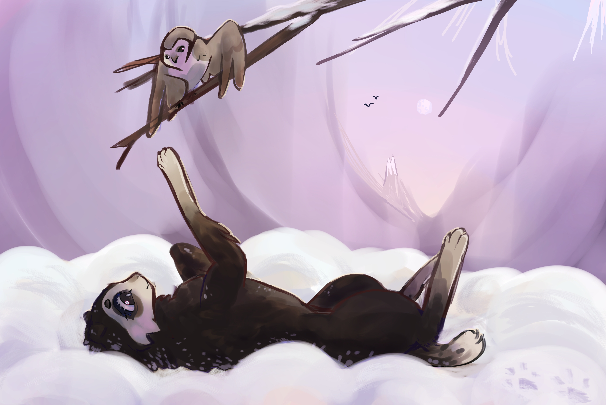
душа у нее светлоя понимаете она это лучшая я всемои хорошие качества в ней она общителная милая чуткая внимателная . плохие мои можед тоже. не знаю я не самыйобъективный наблюдатель.однако вот что самоеСАМОЕ искреннеее ямогу выделить ето ее любоф. ЛЮБОФ К ВОЛКАМ ЛЮБОФ К СТАЕ. ето абслдютный смысл ее жизни если она не одна значид она с ними стая ето отве на все вопросы и ключ ко всем дверям
она в целом чаще всего не протиф компании хотя свое пространство конечно тоже уважаед но волкам его можно нарушать. особенно улыбочке. вот вы увидите его кулончек с солнышком вы что подумаете? вы знаете что он о нем думаед? а чудо знает. чудо знает и откуда кулон и чей он был.. и как коты сделали кулон.. но вам не скажед.. ей так.. птички нашептали.. звезды подмигнули.. она все помнит..
улыбочка часто смотрид в глаза расудеснушке. вроде столко раз уже смотрел, на что там глазеть!! а он все рассматривает, все пытаеца штото прочесть.. а она ево глаза давно прочла.. ещо не в этой жизни.. она всьо помнит.. логическая цепь давно сложилас в ее голове..
ещо она лббит чистить улыбошку. ну как чистить, он уже не чистица, иначе ето сделала бы сюся, однако просто посчитать блошек в шубе тоже нормално. кстати чистки от сюси она тоже всегда принимаед без сопротивления. от пучеглазика же берет ево моховой комочек когда тому нужен ктото внимателный следящий и оберегаед етот комочег пока пучиглазик за ним не вернеца. он всегда возвращаеца.
ее внимателность и особенно к природе наградила ее необычайной связью с звездной волчицей.именно чудо филиграннее всево толкует все ее знаки, предсказания и предостережения, логично связывая их между собой. такшто если вам кажеца, что у нее туман и вокруг, и в голове - ето не так, онапросто внимателно следит и анализируед, она витает токо в чотких облаках формул вычисления знаков. можете щитать ето астрологией ишто она маг гадалка. но она не гадалка она просто аналитик с харошей памятью. ловкост рук и никаково мошенничества.
Дневник
06.01
у нас с вовлками наконецто полностью появились окрасы. не то штобы по ним нельзя было догадаться кто какой будет, но полосочки всякие все еще были блекленькими. хотя на мне ммою коричневость конешно было видно давно, она слишком мощная штобы быть блеклой, ето логично [кошечко распушилась и прищурилась, ощущая солнечные лучи на носу}
мне кажеца моему папе, блохочосу, очень нравица моя шубка, и он говорит што я красавица!! он конечно.. немного по другому общаеца.. но учитывая опыт с пучеглазиком, мне не привыкать догадываться о том, што они хотят сказать. да и ето совсем несложно, я уже наловчилас улавливать
14.01
севодня мы со стаей впервые потренировалис. можед я и не самая быстрая среди них, зато мои удары наносят ничевосебе так урона!! стоит изучить ето поподробнее и выработать тактику.. ето весьма занимательно. вот проказушка, как и положено етой вертихвостке, очень проворно пятится хоть боком хоть задом. в целом все идеально логично
а так же..адекватнолапик.. выпил.. лужу..0.. я разбита. етот дурень всегда хотел ее выпить, я ему такие лекции по етому поводу проводила, а он взял И ВЫПИЛ ЕЕ. просто уму не постежимо как можно таким занимаца. вотак цитируешь цитируешь ему правила, накаания - все бес толку....
20.01
ТЕПЕР Я ВОСПИТАННИЦАА наконецто !! мы с вовчиками посвятились !!1 почти такие же взрослые как пучеглазек! мои наставником стал перви луч!! у нас оказываеца очень крутая снежная территория, даже какаято сова Завируха где-то есть.. хочу ее увидеть!!
25.01
пучегласек попросил меня последить за ево мховым комочьком пока он сдает оин. я за нево немножко волнуюсь, ведь неизвестно што там на пути будед.. вдруг ему нужна будед помощ? все ли местные знают язык жестоф? непредсказуемо! вот в чем я абсолютно точно уверена, так ето в его боевых умениях. ни раз ето своими глазами видела, тут сомнений быть не может, объективно. [кощка прижала комочек ближе] он обязаткльно за ним вернеца
01.02
Я В С Ё СДАЛА я переживала перед бз но ето оказалось как бабочку с валчатами в детстве гонять, совушка дала мне красиви как и она сама камень!! над испытанием карибу пришлос подумать. но ореховый прутек совсем не злой такшто особых трудностей не вызвало. да и первилуч крутой наставник!! с ним было весело учица кажись ему тоже весело было. а пучеглазик на пробник сильно жаловался.. незнаю, можед в наставнике дело? ночная сырость правда кажеца строгой..
А ВОТ ОИНН мне тожи было страшно отпарвляться... однако лес за северными землями оказался невероятно красивым и пустынным! не знаю мне ли так повезло но все што я встречала было уже неживым. .. кроме росомахи конешно.
я там долга бродила но подготовка не прошла бесследно, как мама гаварила с незнакомцами не разговариват. даже када на меня непосредственно напала росомаха я уже была в боевой готовности такшто наш вальс не продлился долга. я конешно поцапала ейо знатно, но у нее уцелел красивый клык, который я и забрала с собой!! надеюсб ее душа обрела покой..
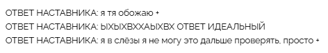
02.02
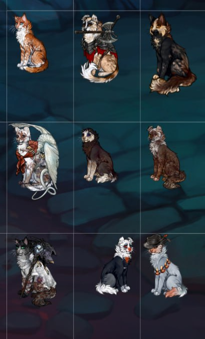
ЙА СТАЛА ВОИТЕЛЬНИЦЕЙ!!!!! ВСЬО Я САМОСТОЯТЕЛЬНАЯ ЕДИНИЦА ОБЩЕСТВА!!!!!! на присвят пришла вся моя семья.. мои обе семьи.. и мои родители, сестра, и стая!! и первилуч!! я даже не то штобы звала, они сами пришли.. мне приятна.. такие ощущения какбудт раньше казались немного инородными, а теперь.. мне привда приятно их видеть!!!
я очен долго думала как выразить все што хочу.. вот у диковатости такая длинная речь была!! но мои мысли начинают рассыпаться как мыши на лугу когда я волнуюсь.. поетому мое полотно было поскромнее. мне кажеца я сильно тараторила от волнения я надеюс ето не очень заметно было ...
моим покровителем стал... БИЗОН!!! я правда удивилас от такого большого мощного зверя! а качество ПРИВЯЗАННОСТЬ!!! подтверждение моей необъятной любви к маим волкам!
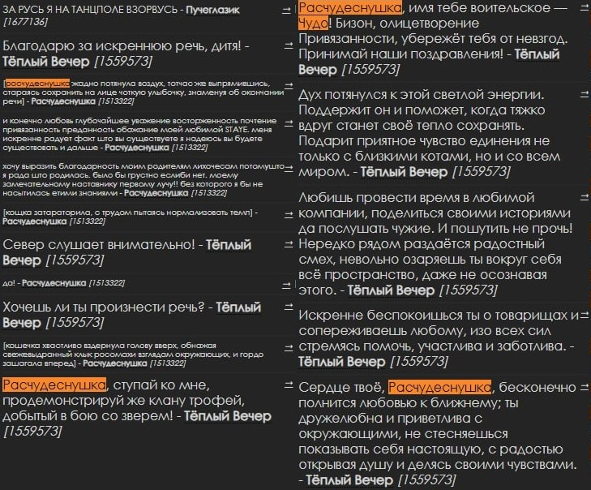
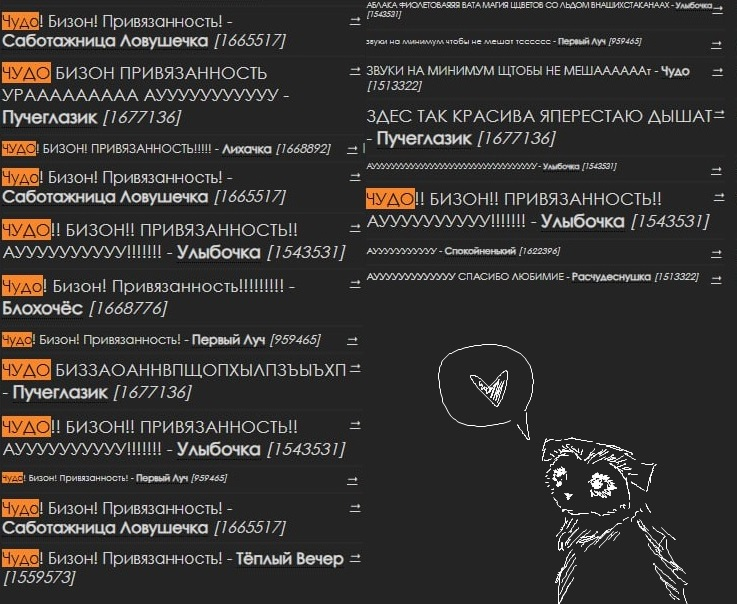
25.02
У НАС С УЛЫБАШКОЙ РОДИЛИС ПЕРВЫЕ КОТЯТА. И СЮСЯ ТОЖИ ОТ ПУЧИГЛАЗА РОЖАИТ. у нас будет самая лучшая волчья семья мы будем любить всех волчат как родных полигамия доброта мир любоф
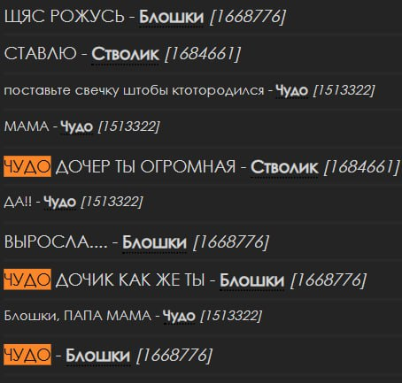
19.05
у миня выросли когти как у сови i'm shocked
Галерея
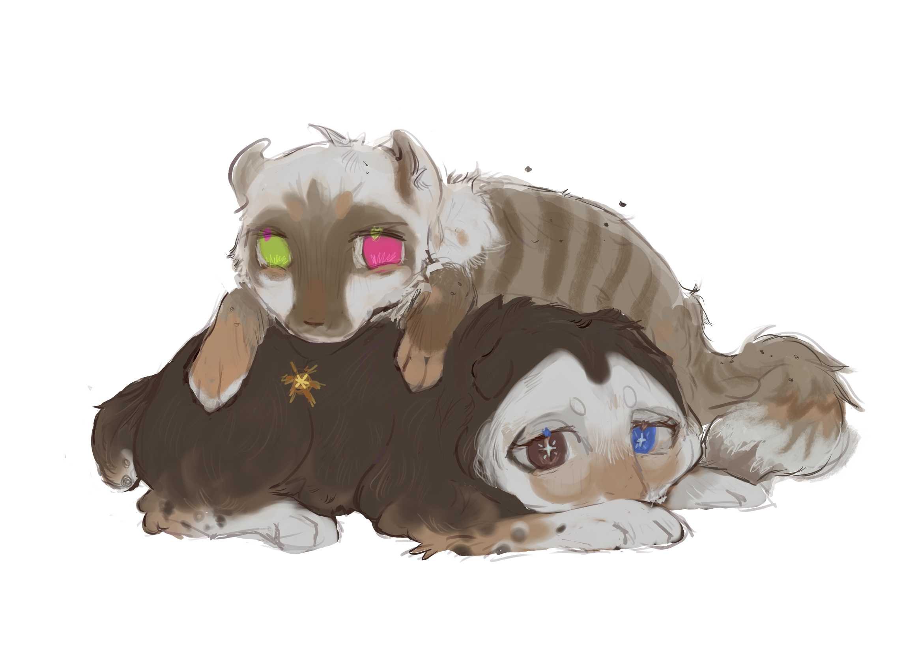
@ulybashka
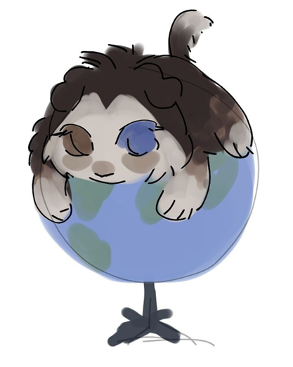
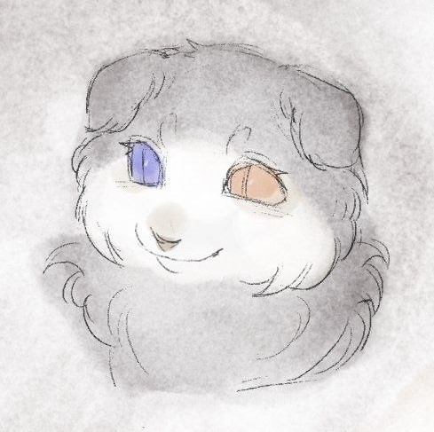
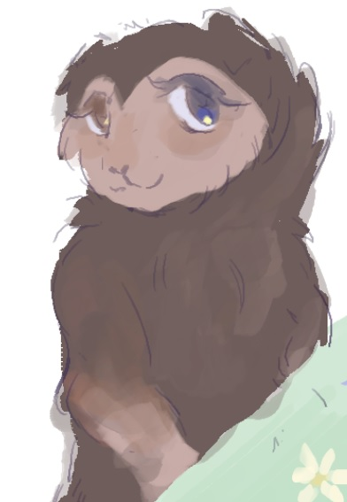
в исполнении улыбошки
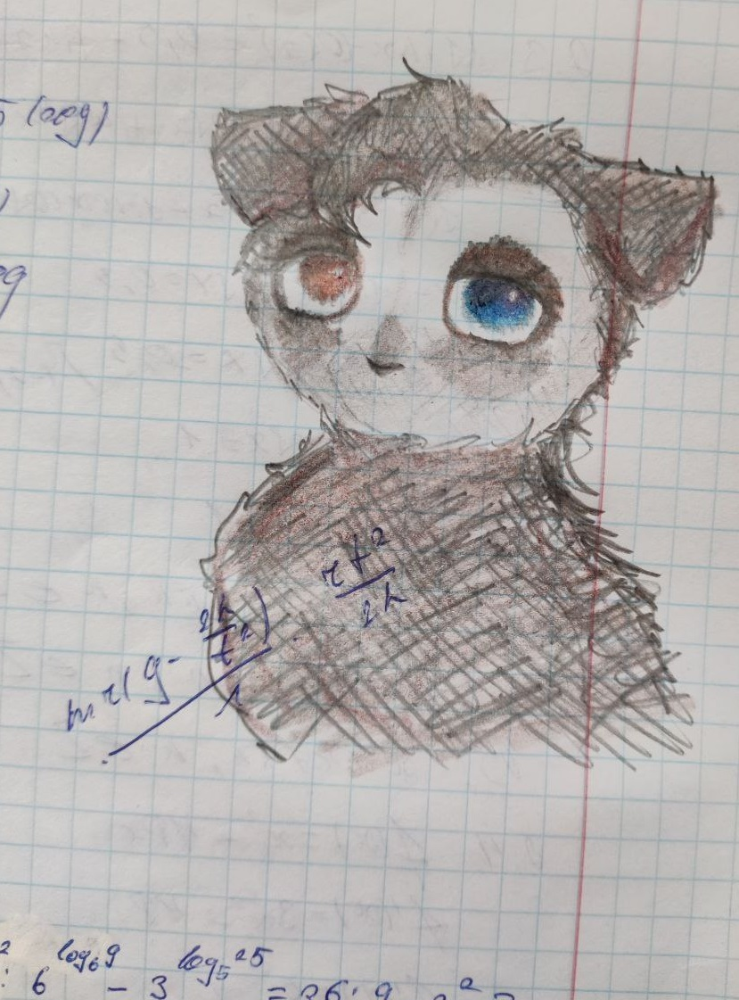